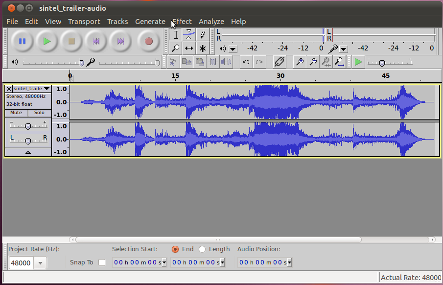
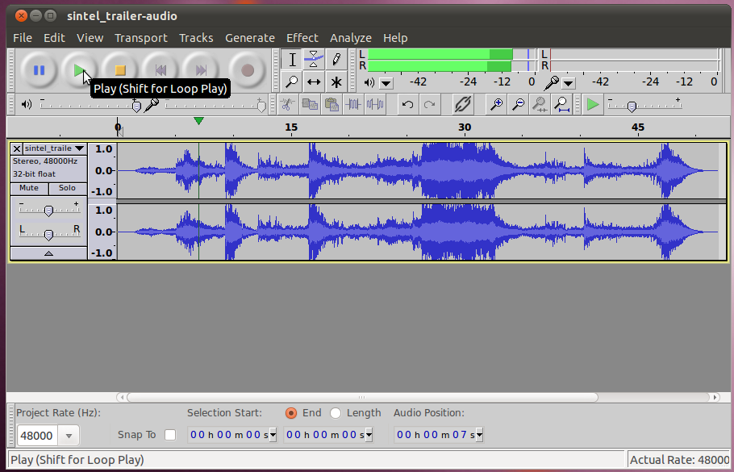
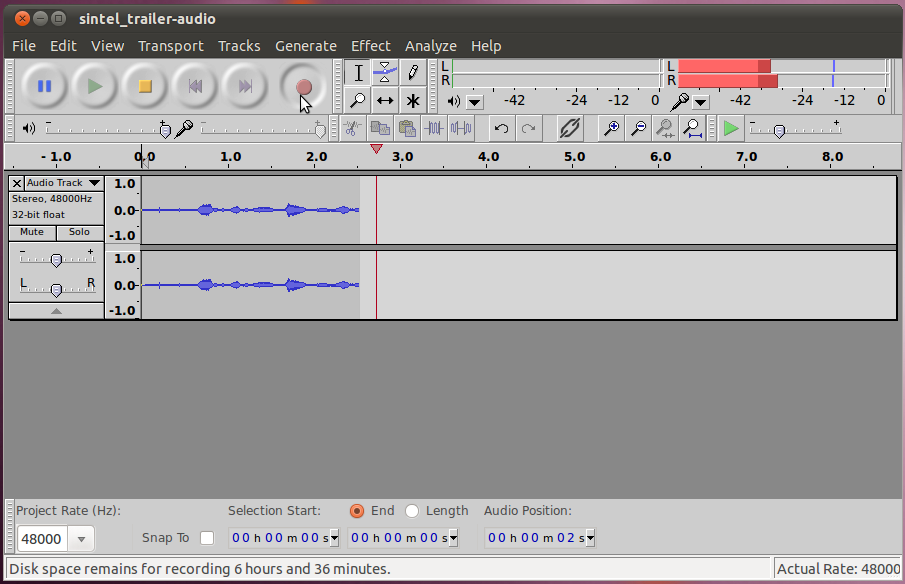

Audacity - Recording and Playback
Audacity is a professional grade audio editor and recorder. It is
realitively easy to get started with, but has many complicated and
powerful features available to professionals.
Import audio
The first thing you need to start using audacity is some audio.
There are two ways to get audio into audacity, record it from a
microphone (more on that in a bit) or import an existing track.
For now, lets use the import feature to get this FLAC encoded track into audacity.
Once you've saved the file to the disk, open Audacity and select File
-> Import -> Audio... and choose the file from your disk.
It will take a second to convert the file from FLAC to the native
editing format (44.1kHz, 32-bit float), then you will see its
"waveform" in the window.

Play Back Audio
Once you have it open, you can play it back to hear what it sounds
like. Just click the green play button, to start. The blue
pause button to the left of the play button will halt the
playback. The yellow stop button to the right of the play button
will stop playback and re-set it to the begenning.

You will see that the cursor moves along with the audio as it is
played. Just under the play button is a slider that will let you
control the volume of the playback. On the same line as the play
button, but further to the right you will see two green bars (labled
L&R for Left and Right channels) which show the level of volume
that is being played at that instant.
Record audio
The other way to get audio into audacity is to record it. First,
lets remove the track we imported previously. Just click the "X"
in the upper left corner of the track's window. Now you should
have a blank audacity window to record into. When you are ready,
push the record button then start talking into your microphone.

This time you will see the cursor be a bit ahead of the graph showing
the waveform. That is because it takes the computer a short
amount of time to process the audio it is recording and display
it. Be aware that the location of the cursor is where you are at
in the timeline, not where the graph of the waveform is showing
up.
You will also notice that there are two bars (red this time) to the
right of where the volume was displayed during playback. This
shows the level of volume of the audio being recorded at that
instant.
Finally, there is a slider under the record button that allows you to
change the strength that the microphone records at. Unfortunately
if you are running Ubuntu, this won't work. Instead, set this in
the Sound Preferences on the Input tab.
Save AUP (AUdacity Project) File
Now that we have the start of an audio project we will want to work
with, we need to save the project so we can open it later. To
save the entire project, go to File -> Save Project As... When
you pick a file name with the .aup extension, audacity will
automatically create a directory at the same location as the .aup file,
with the same name as what is before the .aup. This directory
contains the actual audio data so it is very important.
Do not delete this while trying to cleanup a directory. If you
move the .aup file to a different location, you need to move this
directory as well.
Export Audio Files
At this point we could go on editing our project, adding more audio,
etc. During this process we would be continueously saving the .aup file
(in case our computer crashes). In the end though, we want
to get our final result back out in a format that we can listen to
(WAV, FLAC, OGG-Vorbis, MP3, etc). Note: AUP files are not
something that you can listen to in a media player, they are a special
audacity format (similar to XCF files for the GIMP). To create
the more normal file types, we will use the "Export" function. Go
to File -> Export and selecty the type of file you would like from
the drop down on the bottom (FLAC is the recommended format), then
enter a file name and click "Save".
Make selections
Zoom in and out.